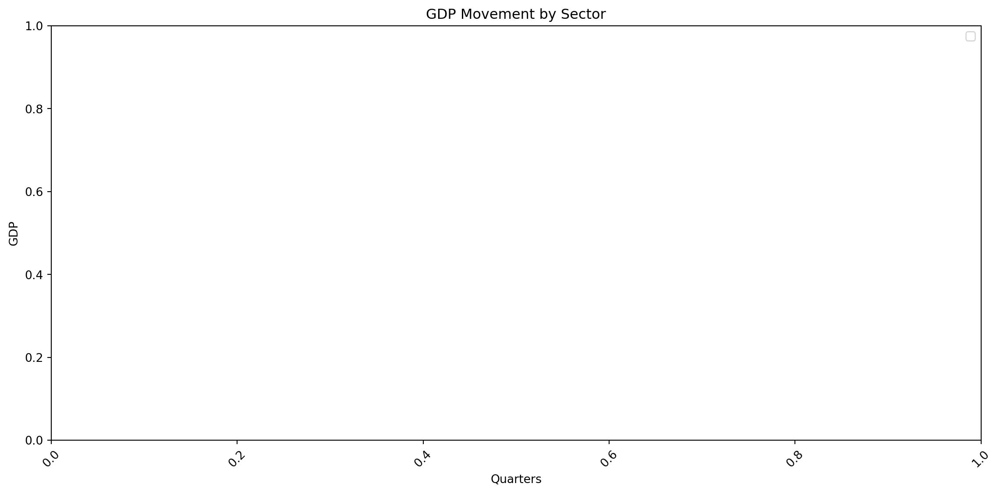
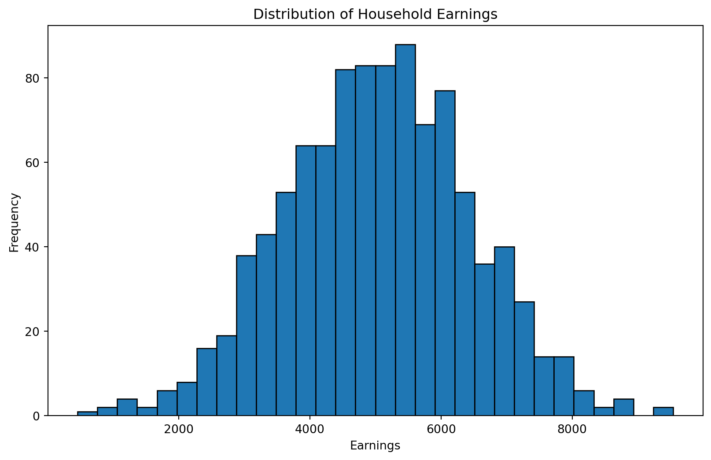

import numpy as np
import matplotlib.pyplot as plt
import numpy_financial as npf
import csvIntroduction to Numpy
Notes for instructors & TA
Section 1: Packages, What’s Numpy and Why Numpy
Importing necessary libraries
Ensure plots are displayed inline in the notebook
%matplotlib inlineIntroduction to NumPy
NumPy is a powerful library for numerical computing in Python. It provides support for large, multi-dimensional arrays and matrices, along with a collection of mathematical functions to operate on these arrays.
Creating a NumPy array
np_array = np.array([1, 2, 3, 4, 5])
print("NumPy array:", np_array)NumPy array: [1 2 3 4 5]Difference between NumPy arrays and lists
NumPy arrays are more efficient for numerical operations and have a fixed size, unlike Python lists which are dynamic but less efficient for numerical computations.
python_list = [1, 2, 3, 4, 5]
print("Python list:", python_list)
print("NumPy array:", np_array)
print("List type:", type(python_list))
print("NumPy array type:", type(np_array))Python list: [1, 2, 3, 4, 5]
NumPy array: [1 2 3 4 5]
List type: <class 'list'>
NumPy array type: <class 'numpy.ndarray'>NumPy allows for efficient element-wise operations on arrays.
array1 = np.array([1, 2, 3])
array2 = np.array([4, 5, 6])
print("Array 1:", array1)
print("Array 2:", array2)
print("Sum of arrays:", array1 + array2)
print("Product of arrays:", array1 * array2)Array 1: [1 2 3]
Array 2: [4 5 6]
Sum of arrays: [5 7 9]
Product of arrays: [ 4 10 18]Array indexing and slicing
NumPy arrays can be indexed and sliced similarly to Python lists, but with more advanced capabilities.
array = np.array([1, 2, 3, 4, 5, 6, 7, 8, 9, 10])
print("Original array:", array)
print("First element:", array[0])
print("Last element:", array[-1])
print("Slicing (elements 3 to 7):", array[2:7])Original array: [ 1 2 3 4 5 6 7 8 9 10]
First element: 1
Last element: 10
Slicing (elements 3 to 7): [3 4 5 6 7]Section 2: Two-dimensional arrays
two_d_array = np.array([[1, 2, 3], [4, 5, 6], [7, 8, 9]])
print(two_d_array)
print("Shape of the array:", two_d_array.shape)
print("Size of the array:", two_d_array.size)[[1 2 3]
[4 5 6]
[7 8 9]]
Shape of the array: (3, 3)
Size of the array: 9Loading a CSV file to 2D array.
In this CSV, the rows represent different sectors and the columns represent the quarters starting from 2018.
Each cell contains the GDP growth of that sector for that quarter, compared to previous year’s quarters.
gdp_data = np.loadtxt('../data/sg-gdp.csv', delimiter=',')
print("GDP data shape:", gdp_data.shape)GDP data shape: (58, 22)Basic statistical operations
print("Mean of GDP data:", np.mean(gdp_data))
print("Standard deviation of GDP data:", np.std(gdp_data))
print("Maximum value in GDP data:", np.amax(gdp_data))
print("Minimum value in GDP data:", np.amin(gdp_data))Mean of GDP data: 5.428526645768025
Standard deviation of GDP data: 33.42683492066746
Maximum value in GDP data: 752.3
Minimum value in GDP data: -93.9Operations along specific axis NumPy functions can operate along specific axes of multi-dimensional arrays.
print("Mean of each sector:", np.mean(gdp_data, axis=0))
print("Mean of each quarter:", np.mean(gdp_data, axis=1))Mean of each sector: [ 4.67241379 6.10517241 3.57586207 4.38103448 4.49137931
7.78448276 10.64310345 15.06551724 13.9362069 8.68793103
11.07758621 13.06034483 52.78965517 1.09827586 -6.73965517
-12.27586207 -21.76034483 -3.69310345 0.79827586 1.40689655
1.61896552 2.70344828]
Mean of each quarter: [ 6.57272727 4.21363636 3.45909091 13.68181818 9.71818182 5.38181818
7.52272727 11.48636364 12.26363636 2.43181818 16.98181818 6.22727273
13.35 2.78181818 12.23181818 7.08181818 2.14545455 5.36363636
6.48636364 -5.5 3.80454545 4.64090909 1.59545455 6.06363636
35.45909091 2.84090909 6.49545455 6.56818182 8.99090909 2.50454545
2.65454545 3.16363636 6.50454545 1.27727273 2.24545455 2.75909091
2.84090909 3.14090909 0.7 1.29545455 -1.08181818 -2.07727273
-0.50909091 10.51818182 4.67727273 0.56818182 5.81818182 3.27272727
-6.14545455 1.79545455 2.20909091 0.56818182 3.66818182 35.67727273
1.15 1.90909091 2.67272727 0.73636364]np.arange creates evenly spaced values within a given interval.
range_array = np.arange(0, 10, 0.5)
print("Range array:", range_array)Range array: [0. 0.5 1. 1.5 2. 2.5 3. 3.5 4. 4.5 5. 5.5 6. 6.5 7. 7.5 8. 8.5
9. 9.5]np.transpose changes the shape of an array - rows become columns and vice versa
transposed_gdp = np.transpose(gdp_data)
print("Transposed GDP data shape:", transposed_gdp.shape)Transposed GDP data shape: (22, 58)Filtering with boolean arrays
high_gdp = gdp_data > 10 # Assuming 500 is a high GDP value
print("Sectors with high GDP:\n", gdp_data[high_gdp])Sectors with high GDP:
[ 17.5 24.5 20.9 22.9 23.1 31.6 20.9 24.1 27.7 29.8 43.3 21.9
25.3 27. 25.4 37.7 11.4 11.6 11.3 15.5 15.6 17.6 17.7 12.6
16. 45.1 106.3 174. 12.9 25. 27.3 21.6 28.4 27.6 22.8 24.7
10.1 10.1 11. 34.3 10.5 11.8 10.9 21.7 27.9 21.9 22.8 21.6
25.7 16.5 20.7 15. 25.1 33.7 22.6 30.5 27.5 29.9 14.1 17.5
21.9 15.3 25.7 34.6 23.7 32.2 29.2 28.5 15. 10.6 15.2 19.5
59.1 32. 48.3 88.1 90.7 89.5 80.5 87.6 51.2 12.3 19.7 24.6
48.2 51.1 55.3 40.1 28.5 21.2 33.7 44.1 110.8 109.8 99.8 56.7
15.1 11.9 19.5 20.4 31.4 31.1 37.2 11.1 15.1 13.5 18.3 19.2
13.3 17.8 13.7 15.2 14.2 14.9 12.9 12.2 12.4 12.8 11.9 10.3
11.3 13.8 14.6 14.7 14.5 10.3 11. 15.4 13. 10.6 16.1 11.2
12.4 12.3 28.7 49.1 16.4 15.8 17.7 18.7 15.1 12.9 10.9 12.
12.4 10.8 12.9 11.7 19.3 11.5 10.5 21. 10.5 10.2 11.1 11.6
10.3 10.3 23.5 11.4 11.2 26.2 29.4 23.5 25.6 47.8 36.4 87.1
37.6 673.5 10.6 11.4 10.6 10.9 16.6 14.9 17.6 14.3 14. 13.4
11.2 18. 25.3 21.9 23.1 22.8 28.8 16. 10.6 12.3 20.6 29.7
122.7 15.5 17.9 16.9 13.1 25.1 16. 18.2 11.5 11.4 11. 28.6
88.8 158.3 33.7 14.2 10.7 11.2 12.8 11.3 13.7 16.2 55. 10.4
13.9 29.7 14.2 12.8 17.9 16. 15.3 14.9 12.6 15.1 22.5 12.4
10.9 13. 24.3 26.2 36.7 11.3 17.6 17.2 12.6 17.1 12.4 14.
13.5 14.2 15.1 10.8 10.7 10.2 11.6 11.2 11.6 10.1 13.4 10.5
11.8 10.4 10.7 14.5 36.3 50.2 11.1 13.3 13.2 13.8 12.4 11.
16.4 18.6 23.3 21.6 18.4 21.4 37.6 27.4 68.3 30.2 752.3 11.7
15.9 16.3 74.3]Section 3: NumPy financial functions
rate = 0.05
nper = 10
pmt = 1000
print("Future value:", npf.fv(rate, nper, -pmt, 0))Future value: 12577.892535548839To put more examples here
Section 4: Matplotlib
plt.figure(figsize=(12, 6))
# put viz code here
plt.title('GDP Movement by Sector')
plt.xlabel('Quarters')
plt.ylabel('GDP')
plt.legend()
plt.xticks(rotation=45)
plt.tight_layout()
plt.show()No artists with labels found to put in legend. Note that artists whose label start with an underscore are ignored when legend() is called with no argument.
Visualizing household earnings with a histogram
# Generating mock data for household earnings
household_earnings = np.random.normal(5000, 1500, 1000)
plt.figure(figsize=(10, 6))
plt.hist(household_earnings, bins=30, edgecolor='black')
plt.title('Distribution of Household Earnings')
plt.xlabel('Earnings')
plt.ylabel('Frequency')
plt.show()